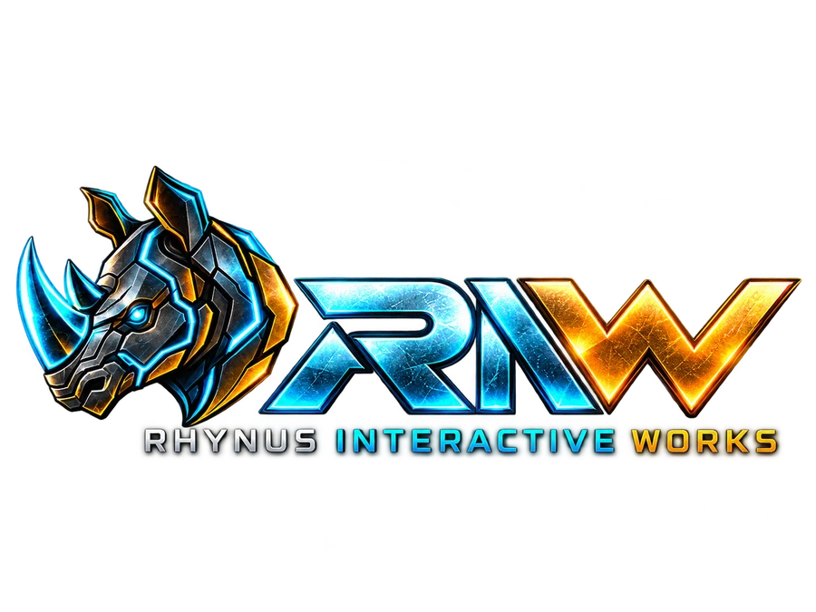

Voz
Aprender relaciones entre fragmentos de audio y palabras.

NEURAL EXPERIENCELABORATORIO DIDÁCTICO · EXPERIMENTO 001
¿Cómo aprende una máquina? Entra con una pregunta, juega con dos interruptores y sal con una explicación que puedas contar a otra persona.
Sin registro, sin cuentas y sin enviar tus experimentos a un servidor.
¡Bienvenido al laboratorio! Soy el rinoceronte guía. Aquí aprenderás qué hace una red neuronal y podrás entrenar una tú mismo.
01 · CON MANZANAS Y PERAS
Imagina que intentas enseñar a una máquina a distinguir manzanas de peras. Puedes escribir reglas sobre forma y color, pero existen manzanas verdes y peras redondeadas. Las reglas simples pueden quedarse cortas.
En el aprendizaje supervisado mostramos ejemplos junto a sus respuestas correctas. Una red neuronal utiliza números y conexiones ajustables para aprender relaciones entre esos ejemplos y las respuestas.
No es un cerebro en miniatura. Es un modelo matemático. Puede acertar, equivocarse y aprender sesgos de los datos.
La fruta es una analogía para entender el aprendizaje. Nuestro experimento real es XOR.
02 · EL PARA QUÉ Y EL POR QUÉ
Porque pueden aprender patrones difíciles de describir mediante una lista corta de reglas: reconocer voz, identificar ciertos objetos en imágenes o estimar relaciones entre señales.
Aprender relaciones entre fragmentos de audio y palabras.
Detectar características visuales y distinguir categorías.
Buscar patrones anómalos, sin confundir una alerta con una prueba.
La pregunta importante: ¿hace falta una red? Si una regla sencilla resuelve el problema con menos coste y más claridad, quizá esa regla sea mejor.
03 · POR DENTRO
Cada entrada se multiplica por un peso; se suman los resultados y un sesgo; después una función de activación transforma la salida. El entrenamiento ajusta pesos y sesgos cuando el resultado no coincide con lo esperado.
Al conectar varias neuronas formamos capas. Nuestra red real usa 2 entradas, 4 neuronas ocultas y 1 salida, con 17 parámetros ajustables.
04 · PRUEBA REAL EN TU NAVEGADOR
La regla XOR dice: la luz se enciende si uno y solo uno de los interruptores está activado. Una neurona simple no puede aprender esta regla con una sola frontera lineal; una red con capa oculta sí.
Red sin entrenar. Las predicciones pueden fallar.
Las líneas muestran conexiones; su grosor representa la magnitud del peso. Azul: positivo; naranja: negativo.
Un valor menor significa que las predicciones se acercan a las respuestas esperadas.
Esta es una implementación JavaScript de la arquitectura 2–4–1 y su entrenamiento. No utiliza modelos preentrenados ni servicios externos. Sus pesos aleatorios son distintos de los del experimento original en Python, por lo que los números pueden variar. Entrenar no garantiza acertar siempre.
05 · LO QUE HEMOS APRENDIDO
Que un conjunto de operaciones matemáticas conectadas puede ajustar pesos y aprender las cuatro combinaciones de XOR.
Que el sistema comprenda una bombilla, razone como un humano o pueda reconocer frutas, detectar intrusiones o resolver cualquier problema nuevo.
Este experimento es pequeño deliberadamente: podemos inspeccionar cada decisión y comprender dónde aparece el aprendizaje.